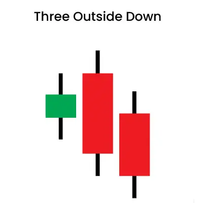
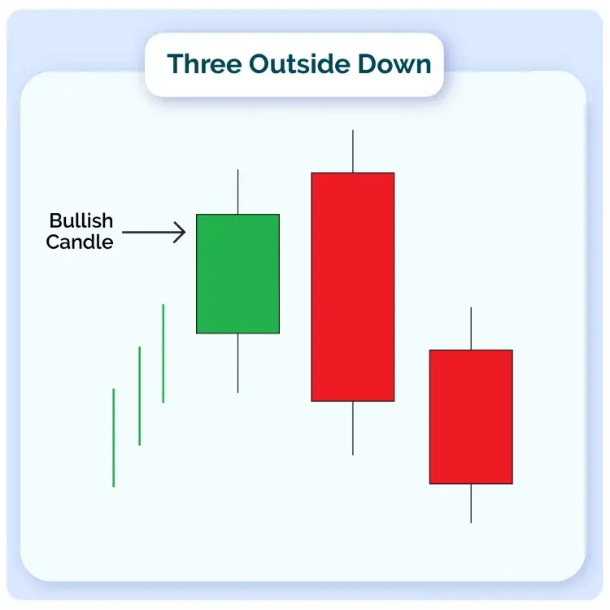
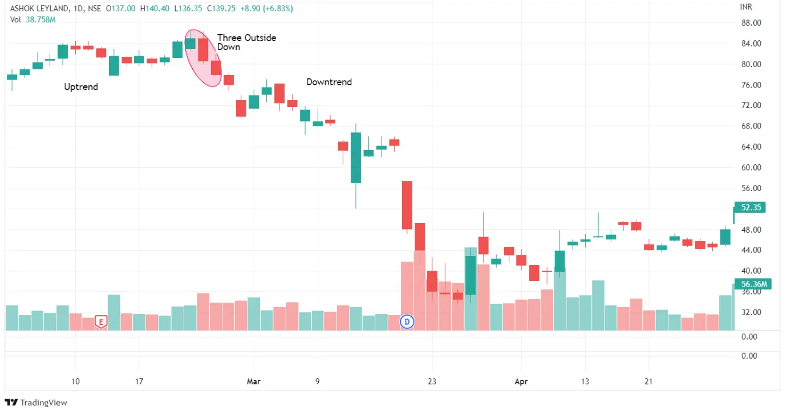
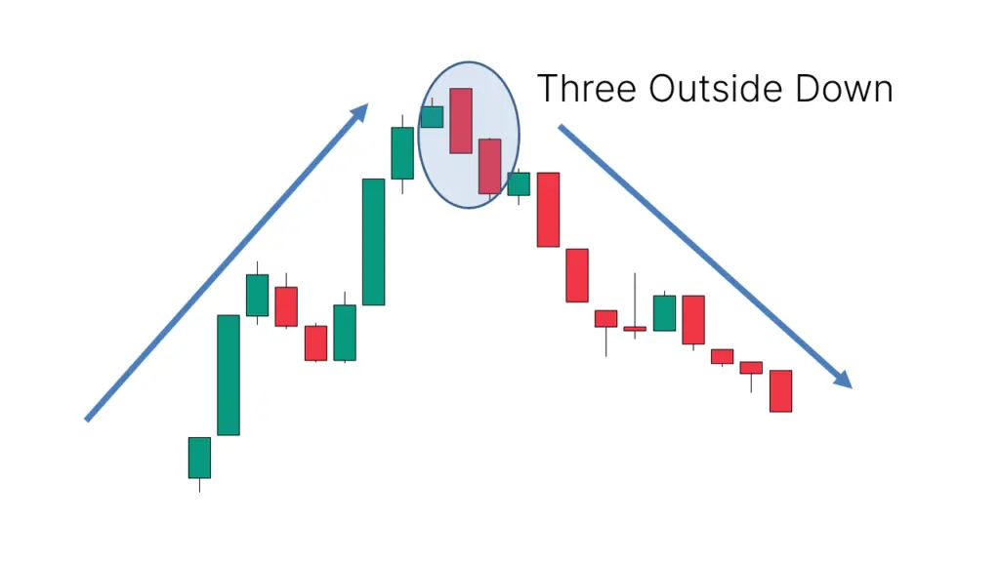

Three successive candlesticks form the three outside down pattern, which usually appears during a bullish trend. The movement of these candles always indicates whether or not a trend reversal is imminent.
A single bullish candle is followed by two bearish candles to form the pattern. For counter-trend trading tactics to work, accurate detection of this pattern is critical.
| Formation |
Let us discuss how this candlestick pattern is formed-

1. The market must be uptrend for a three outside down pattern to appear.
2. The pattern’s first candle will be white, signifying an uptrend.
3. A large black candle will be formed next. It will be long enough for the first white candle to be completely contained within its true body.
4. The third and final candle, which indicates three outside down, must also be black. This candle, however, should close higher than the second candle. This shows that the uptrend is changing direction.
| Trading Example |
As can be seen, the price is strongly going upward, indicating that the bulls have taken control of the market. As a result, the first candle in the pattern closes favourably, following the trend.
The body of the candle, on the other hand, stays modest, which could indicate a slowdown in buying enthusiasm. Finally, the second candle opens ‘gap up,’ indicating the bulls’ attempt to push prices farther higher.

The purchasing enthusiasm has entirely faded at this time, and the bears have entered the market. This rapid surge of sellers in the market flips the market, causing the price to drop. The bears’ grip on the second session is so strong that the second candle’s closing price is lower than the bullish candle’s initial price.
Because of the strong selling pressure, the second candle ends up engulfing the first. The bears ramp up the pace in the third session, with the pattern’s last candle ending in the negative zone.
